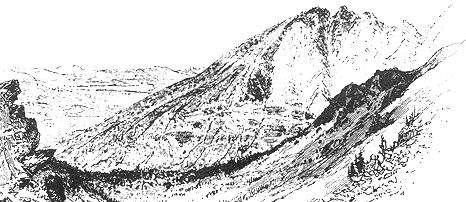

THE BUGLE-AMERICAN/2909 N. HUMBOLDT AVENUE/
MILWAUKEE, WISCONSIN 53212/WEEKLY/$9.00 A YEAR.
NOTE: The following was given in testimony by Mr. Wright earlier this year before a Department of the Interior hearing in Anchorage, Alaska, on environmental impact of the proposed trans-Alaska oil pipeline.
My name is Sam Wright. I am a resident of Brooks Range, approximately 80 miles northeast of Bettles Field, north of the Arctic Circle. I am not here to testify against the development of Alaska's oil resources, but rather to speak for her greatest resource, wilderness.
One definition of wilderness is that very few people inhabit it. Therefore, there are few voices to speak from within. As a resident in the Brooks Range, I feel it not only my privilege, but my duty to speak for those voiceless who might never be heard if I do not choose to represent them.
Who are these voiceless? They are those who share this planet-spaceship with us - whose presence here defines our human qualities and concerns as much as any social, human institution. They are the caribou who have called this their home for thousands of years. They are the wolf, the lynx, the fox, the wolverine. They are the majestic Dall sheep, the grizzly bear, the gerfalcon and the arctic loon. They are the millions of shore birds and the arctic tern, who yearly flies eleven thousand miles from Antarctica to nest by the lakes of this wilderness.
Who will speak for those spruce trees which struggle up the Dietrich River, moving timberline north . . . trees whose diameter is seldom more than eight inches but were seedlings when George Washington was inaugurated our first president?
Who will speak for solitude . . . one of the last places where the ancient sounds of life can be heard without the whine of gears or the drone of engines?
Who will speak for those of our own species to come, those who will have no place left in the world uncontaminated by their predecessors' self-righteous-need to convert everything - including beauty and solitude - into dollars?
Who will speak for this last great wilderness to remain wilderness? For if it goes, it will never be returned. I have no choice. I must speak because I am not voiceless, and this is my home.
My wife and I are residents of the Brooks Range ire northern Alaska. We live within ten miles of the proposed trans-Alaska pipeline route along the Koyubuk and Dietrich rivers. We know first-hand the wildlife, the long dark winters and the endless summer sure north of the Arctic Circle.
We have chosen to live in this last great wilderness, disturbing it as little as possible and becoming a part of its ecology. One reason for this choice several year ago was the recognition that at this moment in histor this great wilderness is doomed unless voices speak out in its behalf. And certainly a voice should come from the wilderness itself.
For myself arid those other inhabitants who with man share this last undefiled place on this continent, those whom I represent in this appeal, I say that all the oil in Alaska is not worth the loss of this last great wilderness. This wilderness is the heritage of us all. And since it is the heritage of us all, we should ail have a voice in the decisions which will determine its fate.
However, the destruction of our heritage has already begun without our being heard . . . without a permit from the Interior Department for the pipeline and the haul road that would run beside it. Caravans of trailers and heavy equipment have already been hauled up the Dietrich River into the wilderness of the Brooks Range.
Bulldozers have already cut a swath north of timberline. For months, great Hercules aircraft flew regularly over our small isolated cabin in the wilderness-to Galbraith Lake-on the north slope of the range . . . hauling in equipment for the construction of the oil pipeline and haul road over the pass. Helicopter loads of survey and construction crews, with their attendant debris, were flown into the few lakes in our area to fish for trout, which-in the northern cold-take ten to twenty years to reach maturity. If the bulldozing, construction camps, airfields and traffic can function without the Department of Interior permit, there is no question that to grant one will mark the end of our last great wilderness.
If we permit the construction of a pipeline and its accompanying haul road to be built through this wilderness, we will not have moved forward or confronted the future with vitality and courage. We will, instead, have taken a giant step backward. For real progress is to recognize, preserve and wisely use our resources. And our greatest resource is in greatest jeopardy, because it can never be replaced or recreated; it is the wilderness.
We cannot plead ignorance today as we have in the past. If we permit the domestication and ultimate destruction of this wilderness, we shall be condemned by our posterity for having deprived them of their heritage. Our choice is not between wilderness and oil. Our struggle is not between oil companies and the public. Our common responsibility, in the light of overwhelming scientific and technical evidence presented by those who do not have a vested economic interest in the decision confronting us, is to save the wilderness.
I cannot speak for other people. They have a voice of their own.
But for myself and my voiceless neighbors in the Brooks Range, I appeal not only to the Secretary of the Interior, but also to the President of the United States, my fellow Alaskans, and particularly the representatives of the seven oil companies who formed the Alyeska Pipeline Service Corporation, to save this last great wilderness. When it goes, there is no other.
- Sam Wright, 1971
|
 |
|
|